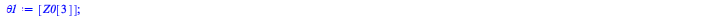

Reduce index by one [2]
Differentiate constraint not containing dot variables and save algebraic constraint for projection
| > | HIDDEN2 := [op(HIDDEN1), ALG[1],ALG[2]]:<%>; |
| (6.3.2.1) |
| > | diff(ALG[1],t);
diff(ALG[2],t); |
| (6.3.2.2) |
| > | ALG[1] := subs(REMOVE_DOT,subs(SS_DIFF_TO_DOT,diff(ALG[1],t))):
ALG[2] := subs(REMOVE_DOT,subs(SS_DIFF_TO_DOT,diff(ALG[2],t))): |
Multiplier appears, try to solve for dot variables and lambda.
Use GenerateMatrix for the generation of the linear system.
| > | VARS := [x1dot(t),x2dot(t),x3dot(t),x4dot(t),x5dot(t),lambda__1(t),lambda__2(t)]; |
| (6.3.2.3) |
| > | M, R := GenerateMatrix( convert(ALG,list), VARS ); |
| (6.3.2.4) |
| > | REMOVET := s__2(t) = s__2,
s__3(t) = s__3, theta__1(t) = theta__1, theta__2(t) = theta__2, theta__3(t) = theta__3, x1(t) = x1, x2(t) = x2, x3(t) = x3, x4(t) = x4, x5(t) = x5: |
| > | Mf := subs(data,REMOVET,M); |
| (6.3.2.5) |
| > | Rf:=subs(data,REMOVET,R); |
| (6.3.2.6) |
| > | RHS_ODE := proc( Z, t,Mf,Rf )
local g := 9.81,var, MM, RR, SOL; var := [ s__2 = Z[1], s__3 = Z[2], theta__1 = Z[3], theta__2 = Z[4], theta__3 = Z[5], x1= Z[6], x2= Z[7], x3= Z[8], x4= Z[9], x5= Z[10]]; SOL := LinearAlgebra[LinearSolve](subs(var, Mf),subs(var, Rf)); Vector[column](10, [ Z[6],Z[7],Z[8], Z[9],Z[10], SOL[1], SOL[2],SOL[3], SOL[4],SOL[5] ]); end proc; |
| (6.3.2.7) |
| > | subs(REMOVET,HIDDEN2); |
| (6.3.2.8) |
| > | PROJECT := proc( Z, t ) # in general DAE coeffs depend on time (not in this case)
local g := 9.81, s__2,s__3,theta__1,theta__2, theta__3, x1,x2,x3,x4,x5, fun, constraints, SOL; fun := (s__2-Z[1])^2+ (s__3-Z[2])^2+ (theta__1-Z[3])^2+ (theta__2-Z[4])^2+ (theta__3-Z[5])^2+ (x1-Z[6])^2+ (x2-Z[7])^2+ (x3-Z[8])^2+ (x4-Z[9])^2+ (x5-Z[10])^2; constraints := { (-L - cos(theta__1)*L__s0 + cos(theta__2)*s__2 + cos(theta__2)*L__s0)^2 + (-sin(theta__1)*L__s0 + sin(theta__2)*s__2 + sin(theta__2)*L__s0)^2 - L^2=0, (-L - cos(theta__1)*L__s0 + cos(theta__2)*s__2 + cos(theta__2)*L__s0)^2 + (-sin(theta__1)*L__s0 + sin(theta__2)*s__2 + sin(theta__2)*L__s0)^2 - L^2=0, 2*(-1 - cos(theta__3) - cos(theta__3)*s__3 + cos(theta__1))*(x5*sin(theta__3) + x5*sin(theta__3)*s__3 - cos(theta__3)*x2 - x3*sin(theta__1)) + 2*(-sin(theta__3) - sin(theta__3)*s__3 + sin(theta__1))*(-x5*cos(theta__3) - x5*cos(theta__3)*s__3 - sin(theta__3)*x2 + x3*cos(theta__1))=0, 2*(-L - cos(theta__3)*L__s0 - cos(theta__3)*s__3 + cos(theta__1)*L__s0)*(x5*sin(theta__3)*L__s0 + x5*sin(theta__3)*s__3 - cos(theta__3)*x2 - x3*sin(theta__1)*L__s0) + 2*(-sin(theta__3)*L__s0 - sin(theta__3)*s__3 + sin(theta__1)*L__s0)*(-x5*cos(theta__3)*L__s0 - x5*cos(theta__3)*s__3 - sin(theta__3)*x2 + x3*cos(theta__1)*L__s0)=0 }; SOL := Optimization[Minimize]( fun, constraints, initialpoint = {s__2=Z[1],s__3=Z[2],theta__1=Z[3],theta__2=Z[4],theta__3=Z[5],x1=Z[6],x2=Z[7],x3=Z[8],x4=Z[9],x5=Z[10]} ); subs(SOL[2],<s__2,s__3,theta__1,theta__2,theta__3,x1,x2,x3,x4,x5>); end proc; |
| (6.3.2.9) |
| > | ADVANCE := proc( Z_in, t_begin, t_end, dt,Mf,Rf, do_projection := true )
local Z0, Z1, t, pc, last_pc := -1, # output values T,s2,s3,theta1,theta2, theta3,x1,x2,x3,x4,x5; # project initial condition Z0 := PROJECT( Z_in ); # initialize output list T := [t_begin]; s2 := [Z0[1]]; s3 := [Z0[2]]; theta1 := [Z0[3]]; theta2 := [Z0[4]]; theta3 := [Z0[5]]; x1 := [Z0[6]]; x2 := [Z0[7]]; x3 := [Z0[8]]; x4 := [Z0[9]]; x5 := [Z0[10]]; # advance t := t_begin; while t < t_end do pc := 100*(t-t_begin)/(t_end-t_begin); if pc > last_pc+0.5 then printf("[%g%%] t=%g\r", pc, t ); last_pc := pc; end if; # advance using improved Euler (or Collatz) # half forward Euler step Z1 := Z0 + (dt/2)*RHS_ODE( Z0, t,Mf,Rf ); t := t+dt/2; # full iproved step Z1 := Z0 + dt*RHS_ODE( Z1, t ,Mf,Rf); t := t+dt/2; # project step to Z0 if do_projection then Z0 := PROJECT( Z1, t ); else Z0 := Z1; end if; # save solution to listì T := [op(T),t]; s2 := [op(s2),Z0[1]]; s3 := [op(s3),Z0[2]]; theta1 := [op(theta1),Z0[3]]; theta2 := [op(theta2),Z0[4]]; theta3 := [op(theta3),Z0[5]]; x1 := [op(x1),Z0[6]]; x2 := [op(x2),Z0[7]]; x3 := [op(x3),Z0[8]]; x4 := [op(x4),Z0[9]]; x5 := [op(x5),Z0[10]]; end; table( [ "t" = T,"s__2" = s2, "s__3" = s3, "theta__1" = theta1,"theta__2" = theta2, "theta__3" = theta3,"x1" = x1, "x2" = x2,"x3" = x3, "x4" = x4,"x5" = x5 ]); end proc; |
 |
(6.3.2.10) |